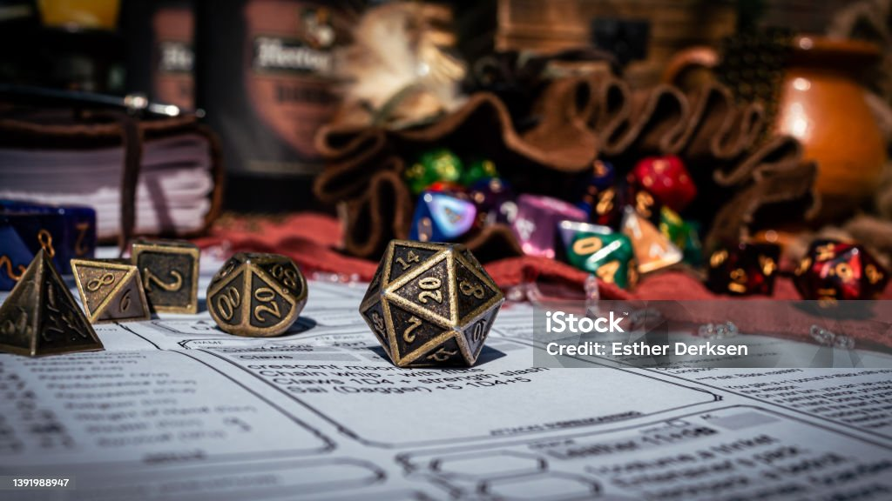
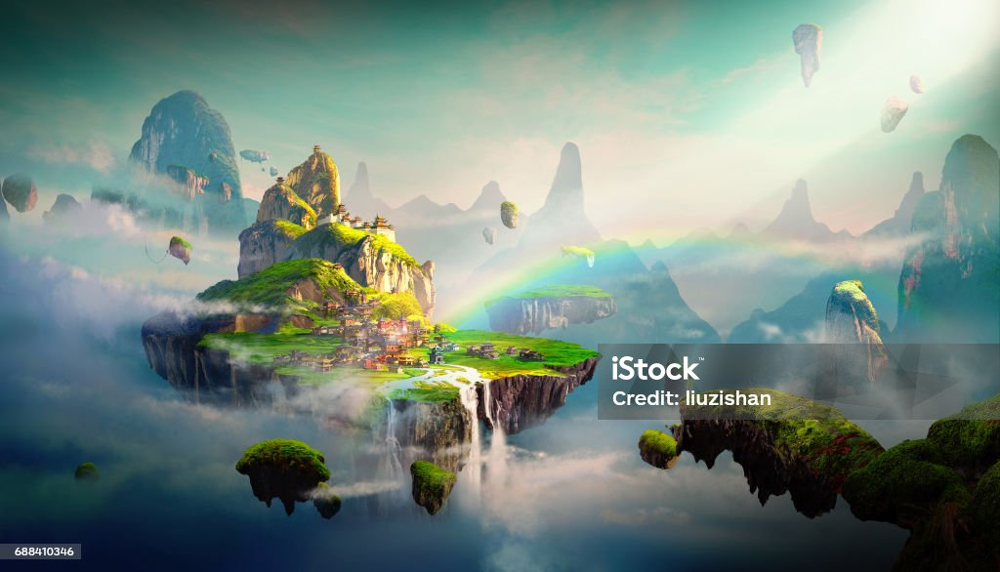

Roolipelien historia alkaa 1900 luvulta. Monet teatteriesitykset ja kirjat sisälsivät rooleja ja rooleihin eläytymistä, johon katsoja ja lukija pääsi osaksi.
Myös sen ajan simulaatio ja strategiset sotapelit sisälsivät mekaniikkoja jotka tulisivat myöhemmin osaksi roolipelejä.
Roolipelien varsinainen synty tapahtui 1974, kun Dungeons and Dragons julkaistiin. Se oli ensinmäinen painettu roolipeliteos, joka toi harrastuksen yleisön eteen ja loi syvän harrastuksen maailmanlaajuisesti.

Dungeons and Dragonsissta syntyi jättimäinen kysyntä roolipeleille, ja pian monet eri yritykset ja talot alkoivat tuottamaan omia pelejä ja systeemejä. Tämä suosio kesti 90-luvulle, jonka jälkeen sen suosio
väistyi videopelien ja kotikonsolien suosion myötä, mutta harrastusyhteisö eli ja uusia systeemejä ja pelejä julkaistiin. 2010-luku herätti harrastuksen taas ihmisten näkyvyyteen. Streemaus ja internetin
tarjoamien palveluiden avulla pöytäroolipelaamisesta on tullut helpompaa päästä sisään. Nykyään voit löytää podcasteja, livestriimejä ja oppaita peleistä, hahmojen luonnista, sekä eläytymisestä aina historiaan ja
omien tarinoiden kirjoittamiseen.
Pöytäroolipelaamisen aloittaminen
Ensinmäinen osa harrastuksessa on valita miljöö ja tyyli, jota halutaan pelata. Pöytäroolipelit tarjoavat asetelmia ja pelimaailmoja aina synkästä goottisesta kauhusta, aina iloisen pirteään fantasiaan.
On tärkeää miettiä tarkkaan millaista pelia haluavat pelinjohtaja vetää ja pelaajat pelata, jotta ryhmäharmonia säilyy hengissä. Seuraava vaihe on löytää ryhmä ystäviä tai tuttavia, joiden kanssa pelata.
Yleensä hyvä määrä on pelinjohtaja ja kolme pelaajaa, mutta voit itse valita haluatko vähemmän vai enemmän pelaajia. Sen jälkeen valitaan roolit ja ryhmän toiveet, jonka jälkeen luodaan hahmot ja luodaan
alustava pelimaailma, ja aletaan pelaamaan. Mikäli et tunne ketään kuka olisi kiinnostunut pelaamaan, internet on täynnä forumeja, sivustoja ja yhteisöjä, joista varmana löytyy ihmisiä, mikäli kielimuuria
ei ole.
Sivustoja
Ajattelin tähän osioon lisätä muutamia sivustoja, jotka voisivat olla hyviä paikkoja tutustua taikka löytää materiaaleja tutkittavaksi, painikkeilla pääsee käymään sivustoissa.
drivethrurpg tarjoaa katalogin pöytäroolipelejä laillisesti. Täältä pystyt etsimään ja ostamaan pdf-tiedostona roolipelikirjoja ja muuta kirjallisuutta.
reddit on maineestaan huolimatta yksi parhaimpia yhteisöjä, jossa roolipelaajia löytää. Sieltä saa apua pelinjohtamiseen, systeemeihin ja sääntöihin. Yhteisöt ovat avoimia ja mielellään neuvovat uusia tulokkaita.

Tekniikat
Tämän sivun teossa on käytetty seuraavia tekniikoita: